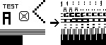

image2cpp
Click here to visit the Github repo for this tool.
1. Select image
Selected image size:
no image selected
or
1. Paste byte array
Read as horizontal
Read as vertical
2. Image Settings
Canvas size:
*
pixels
Background color:
White
Black
Brightness threshold:
0 - 255; pixels with brightness above become white, below become black.
Scaling
original size
scale to fit, keeping proportions
stretch to fill canvas
stretch to fill canvas horizontally
stretch to fill canvas vertically
Center horizontally
Center vertically
Centering the image only works when using a canvas larger than the selected image.
Invert image colors
3. Preview
4. Output
Add Arduino code
Adds some extra Arduino code around the output for easy copy-paste into
this example
.
Variable name:
Draw mode:
Horizontal
Vertical
If your image looks all messed up on your display, like the image below, try the other mode.

Generate code